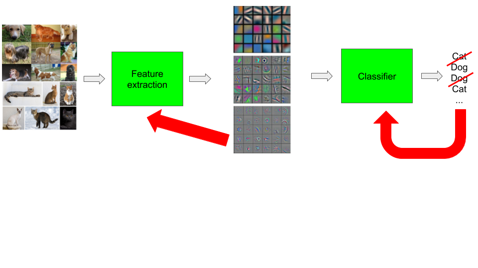

class: center, middle, title-slide count: false # Module 7 ## Dataloading: datasets and dataloaders <br/><br/> .bold[Marc Lelarge] --- # Deep Learning pipeline ## .red[Dataset and Dataloader] + .grey[Model] + .grey[Loss and Optimizer] = .grey[Training] .center[  ] --- # Overview of the course: 1- .grey[Course overview: machine learning pipeline] 2- .grey[PyTorch tensors and automatic differentiation] 3- .grey[Classification with deep learning] 4- .grey[Convolutional neural networks] 5- Embedding layers and dataloaders * .red[Building block for a model] - in Pytorch: [Sparse layers](https://pytorch.org/docs/stable/nn.html#sparse-layers) * .red[Datasets and dataloaders] - in PyTorch: [`torch.utils.data`](https://pytorch.org/docs/stable/data.html) --- # Dataloading -- count: false ## Dataset class `torch.utils.data.Dataset` is an abstract class representing a dataset. Your custom dataset should inherit `Dataset` and override the following methods: - `__len__` so that `len(dataset)` returns the size of the dataset. - `__getitem__` to support the indexing such that `dataset[i]` can be used to get ith sample -- count: false ## Iterating through the dataset with `Dataloader` By using a simple `for` loop to iterate over the data, we are missing out on: - Batching the data - Shuffling the data - Load the data in parallel using multiprocessing workers. `torch.utils.data.DataLoader` is an iterator which provides all these features. --- ## Examples (1) In the first lesson, we created two datasets, one for the training and one for the validation: ``` from torchvision import transforms,datasets normalize = transforms.Normalize(mean=[0.485, 0.456, 0.406], std=[0.229, 0.224, 0.225]) imagenet_format = transforms.Compose([transforms.CenterCrop(224), transforms.ToTensor(), normalize]) dsets = {x: datasets.ImageFolder(os.path.join(data_dir, x), imagenet_format) for x in ['train', 'valid']} ``` Hence `len(dsets['train'])` returns `23000`, i.e. the number of images in the training set, and more precisely, the number of files located at `data_dir/train/`. Recall that `data_dir/train/` (and similarly `data_dir/valid/`) is split in two folders: `cats/` and `dogs/`, you can check that each of these folders have `11500` images with: `ls | wc -l` You can recover the classes with `dsets['train'].classes` which returns `['cats', 'dogs']` These are features of the [`torchvision.datasets.ImageFolder`](https://pytorch.org/docs/stable/torchvision/datasets.html?highlight=imagefolder#torchvision.datasets.ImageFolder) Module. -- count: false More importantly, what returns `dsets['train'][0]`? -- count: false Answer: a tuple containing a tensor and a label. --- ## Examples (1) To obtain a dataloader for the training set: ``` train_loader = torch.utils.data.DataLoader(dsets['train'], batch_size=64, shuffle=True, num_workers=6) ``` -- count: false Then, you can use it as follows: ``` for input, label in train_loader: output = model(input) loss = loss_fn(output, label) optimizer.zero_grad() loss.backward() optimizer.step() ....``` --- ## Examples (2) In the first lesson, we first precomputed features and converted them as `numpy` arrays. You first need to load the features and the labels: ``` conv_feat_train,labels_train = preconvfeat(loader_train) ``` and then, you can create a list for your dataset as follows: ``` dtype=torch.float datasetfeat_train = [[torch.from_numpy(f).type(dtype),torch.tensor(l).type(torch.long)] for (f,l) in zip(conv_feat_train,labels_train)] datasetfeat_train = [(inputs.reshape(-1), classes) for [inputs,classes] in datasetfeat_train] ``` A list has a buil-in function `len()` and a `__getitem__()` method, hence this is a valid dataset for PyTorch. -- count: false To create a dataloader, it is as simple as: ``` loaderfeat_train = torch.utils.data.DataLoader(datasetfeat_train, batch_size=128, shuffle=True) ``` --- ## Examples (3) Today, we will make our own dataloader from scratch using a Python iterator: .grid[ .kol-6-12[ .left[ ``` def minibatch(batch_size, *tensors): if len(tensors) == 1: tensor = tensors[0] for i in range(0, len(tensor), batch_size): yield tensor[i:i + batch_size] else: for i in range(0, len(tensors[0]), batch_size): yield tuple(x[i:i + batch_size] for x in tensors) ```]] .kol-6-12[.left[ ``` def shuffle(*arrays): random_state = np.random.RandomState() shuffle_indices = np.arange(len(arrays[0])) random_state.shuffle(shuffle_indices) if len(arrays) == 1: return arrays[0][shuffle_indices] else: return tuple(x[shuffle_indices] for x in arrays)```]]] -- count: false We will use it as follows (inside an epoch): ``` users, items, ratingss = shuffle(user_ids,item_ids,ratings) user_ids_tensor = torch.from_numpy(users).to(device) item_ids_tensor = torch.from_numpy(items).to(device) ratings_tensor = torch.from_numpy(ratingss).to(device) for (minibatch_num, (batch_user,batch_item,batch_rating)) in enumerate(minibatch(batch_size, user_ids_tensor,item_ids_tensor,ratings_tensor)): predictions = net(batch_user, batch_item) ... ``` --- ## To know more about dataloading have a look at the related [PyTorch tutorial](https://pytorch.org/tutorials/beginner/data_loading_tutorial.html) --- class: end-slide, center count: false The end.